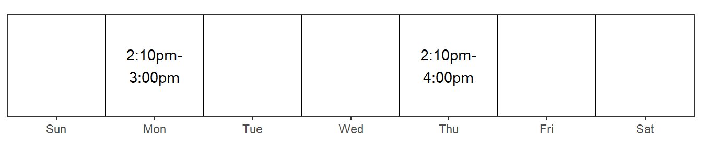
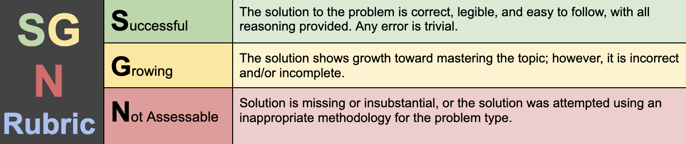
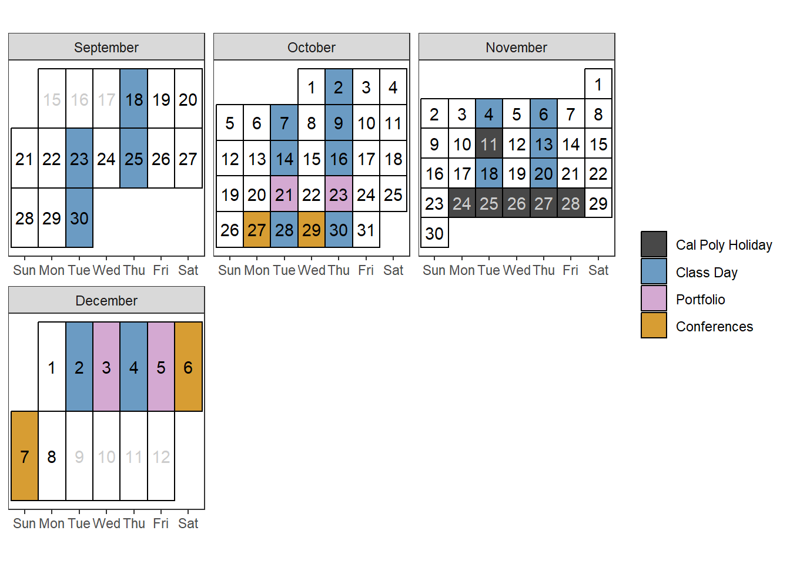

STAT 331, Fall 2025
Statistical Computing with R1
- Section 70: TR 9:10am - 11:00am
- Section 71: TR 12:10pm - 2:00pm
Dr. Allison Theobold (they / them)
Assistant Professor of Statistics

Email: atheobol@calpoly.edu
Student Hours: Are held in my office in Building 25, Office 105 during the following times:
1 What will you learn?
Have you ever wondered…
…how are the visualizations you see in the media made?
…how do people cut down large datasets to address a specific question?
…how the applet simulations in your introductory statistics class worked?
We’ll answer these questions and more by studying the principles of “statistical computing” methods in the programming language called R.
There is not an expectation that you have seen R before, only that you have some experiences with computing (writing code and executing code). For those who have not seen R before, it is an open-source programming language developed by Statisticians, and is one of the main “languages” you will find people use when doing statistics in the wild.
In this course, we will learn the foundational skills for programming in R and a variety of skills for working with data. We will then build on these skills to consider how to write programs which are more efficient.
2 How will you learn?
In order to learn statistical computing, it’s not enough to simply listen to your professor talk about statistical computing—you must do statistical computing. So, to learn the concepts in this course, you’ll be doing a variety of active learning tasks both inside and outside of class:
Before class,
you’ll complete Preview Activities / Check-ins which will guide you through your first contact with new concepts. Preview Activities involve readings, videos, and exercises to build your basic skill fluency. For example, you might be asked to read a chapter from the course textbook, watch a few videos discussing some concepts from the chapter, and then complete some preliminary exercises to get you started thinking about how to apply the concepts in the context of real data.
During class,
you’ll be working with your classmates to complete Practice Activities, which take your Preview Activities a step further. You will collaborate with your team to solve a puzzle, requiring that you accomplish a series of tasks, each of which applies the statistical computing concepts from that week. The purpose of in-class time is for you to be doing statistical computing, with me there to guide you if / when you get lost.
After class,
you can reinforce the material through Lab Assignments, which are an opportunity to demonstrate proficiency of the skills that you’ve learned. If you got something wrong, don’t worry! You’ll have a chance to try again.
Each Lab Assignment will have Challenge Problems, which ask you to extend the skills you’ve learned in class in some way. Frequently, you have the choice of what you would like to learn. The only requirement is that you extend your thinking in some (measurable) way.
3 How will you know how well you are doing?
The grading scheme we’ll be using is probably unlike what you’ve had in previous statistics courses. Instead of the traditional percentage-based system, we will be using Ungrading. Do not let the name mislead you, “ungrading” is a system which privileges the process of revising one’s thinking rather than assessing what you know at a specific point in time (e.g., midterm exam). The intent of which is to give you as many chances as you need (within reason) to learn the skills of the course. You’re not being graded on how quickly you learn—only what you have shown you understand by the end of the quarter. Many grades are not final; you’ll often have the chance to revise and resubmit your work to improve its quality.

Preview Activities
will be scored as Complete or Incomplete. You’ll receive credit for a Preview Activity as long as:
The assignment is submitted by the deadline – before classes start on Tuesday (8am).
Every item has a response that shows a good-faith effort. Submissions that have items left blank will receive no credit, as will submissions with responses such as “I don’t know” or “I don’t understand” or random guesses with no supporting work. Note that correctness is not factored into the grade, so you should feel free to give your best effort on each one without fear of being counted off for wrong answers.
Practice Activities
will be worked on in your assigned team, during class on Tuesdays. Your team will be tasked with applying the skills you learned in the Preview Activities, to come up with a solution to the Practice Activity.
Only the responses to the Practice Activity will be scored, as Complete or Incomplete, based on the answer your group finds. However, the work you perform (in your Quarto document) will act as an artifact demonstrating your skills and will be submitted for feedback.
Practice Activities are due by 5pm on Wednesday, but you should have sufficient time to complete the activity during Tuesday’s class.
Lab Assignments
are aligned with the course’s Learning Targets, which describe exactly what you should be able to do after taking this course. You’ll receive a score for each Learning Target according to the SGN rubric above, as well as feedback to help you improve.
Lab Assignments are due every Monday by 5pm2.
Challenge Problems
Each Challenge Problem will receive a single holistic score on the SGN rubric. If you earn a G, you’ll receive specific written feedback, which you can use to revise and resubmit your work repeatedly until you’re satisfied with the results. If you receive an N, you’ll need to meet with me before you revise your work. (This is so you understand the expectations of the assignment.)
Challenges are due every Monday by 5pm.
3.1 Revisions
The grading system for this class encourages you to submit revisions on Lab and Challenge problems you were not initially successful with. When I grade your Lab and Challenge assignments, I will mark each problem with an S, a G, or an N. You will have the option to retry any Learning Targets for which you scored a G or an N on. When you complete revisions, you will submit a new HTML containing your revisions, alongside written reflections of how your understanding changed from when you first attempted the problem. These reflections are expected to be written immediately below the problem which you revised.
It’s not enough to say “[x] was wrong, so I fixed it”—I need you to talk about why you got [x] wrong in the first place and what you learned that changed your mind. What do you know now that you didn’t know before? Who or what helped you learn?
If your revision does not include reflections, I’ll ask you to add them.
If your revisions do not include reflections by the deadline, your revisions are not eligible to be regraded.
See some examples of really good reflections here – they’re (mostly) from my STAT 313 course, but I think you’ll get the idea.
Submit your revision to the same assignment box on Canvas as your original. This helps me keep track of any outstanding revisions each person has.
It is my goal to have your lab and challenge assignments (which are due on Monday at 5pm) back to you no later than Thursday, so we can spend time talking about the revisions during class. You will then have until the following Friday to complete your revisions on the problems you received a G or an N on.
4 How will your final grade be decided?
This course utilizes a system called “ungrading,” where you will be the arbiter of your own grade. It is likely you’ve never heard of “ungrading,” so let me try to define it for you. Ungrading is a form of “grading” in which you will still do work, which is aligned with clearly defined learning standards. But, none of the work gets a grade, or as non-Americans would say a “mark”. Instead of a mark, your work is carefully evaluated and gets lots of helpful feedback. You will use this feedback to engage in a feedback loop system, whereby you can revise and resubmit, and get more feedback, and so on until the work is deemed to have met whatever standard is in place.
The goal of ungrading is to remove marks from the picture, so you are able to focus your attention on the work itself and engage in the feedback loop. I am removing distractions (marks are distractors) to help you build metacognition and self-evaluation skills, and grow in your learning over time.
One of the four pillars of this grading system is having clearly identified standards, so you know what is expected of you. In this course, there are three dimensions where you will assess your progress against the goals stated for you, these are:
- Accomplishment of Learning Targets
- Evidence of Continued Learning
- Growth as a Team Member
You will work on each of these dimensions throughout the course. Periodically, you will be asked to reflect on your learning and discuss how you have grown in each area. Accompanying each reflection will be an estimation of the grade you have earned in the course. You will be provided feedback on each reflection, letting you know if I agree with your assessment, and, if not, where the discrepancies lie. I want you to view your grade as a conversation between you and me.
Let’s unpack how you are expected to evaluate yourself in these three dimensions.
4.1 Accomplishment of Learning Targets
Each week, a set of learning targets will be outlined. These learning targets will not exist solely within a given week. You will find that the skills you learn early in the course will be used throughout the course. Whereas, some skills, learned later in the course, will not be used as often. You can demonstrate proficiency with these skills through three main avenues: Group-based Practice Activities Lab Assignments Challenge Assignments
However, evidence of continued learning can only be demonstrated within individual lab assignments. You can keep track of your progress yourself using this Interactive Checklist.
4.2 Evidence of Continued Learning
Each week, you will be required to complete a Lab and Challenge assignment where you demonstrate your understanding of that week’s learning targets in the context of a new dataset. These assignments provide two different perspectives of your continued learning.
- They demonstrate your ability to extend your thinking beyond what you’ve learned in class.
- They demonstrate your ability to revise your thinking.
Extend Your Thinking
Each Lab Assignment will have a Challenge Problem which asks you to extend the skills you’ve learned in class in a new way. You will often have the choice of what direction you would like to expand your knowledge. There are no specific requirements for how you extend your skills, only that you extend your thinking in some (measurable) way.
Revise Your Thinking
For the problems in each Lab Assignment, I will give copious written feedback, but I’ll also summarize my feedback with a letter on the SGN scale (as discussed previously). To demonstrate your ability to revise your thinking, I encourage you to revise and resubmit any problems marked G or N.
4.3 Growth as a Team Member
There are two ways you will evaluate your growth as a team member. The first is through your collaboration with your team members. The second is through the code reviews you provide your peers.
Collaborative Group Work
This course uses collaborative learning to provide a supportive community when initially exploring the concepts associated with each week. On Tuesdays, you will collaborate in assigned teams to complete a Practice Activity. Collaborating on the Practice Activity is more than independently coding each task and asking someone a question when you get stuck. Collaborating is working together with your team to accomplish each question.
Many people are uncomfortable working in a team for a variety of reasons, such as fearing looking dumb, being rejected, or being disrespected. It is my hope that our weekly collaborations will offer opportunities for you to grow as a group member, by becoming more aware of how you interact with others.
During the first week of class, each of you will be placed in a group with one other student. During Weeks 2-5, you will work with this person on the Practice Activities we complete during class on Tuesdays. To make group collaborations more equitable, I expect for you and your partner to alternative between two “roles”—Developer and Coder. We will discuss these roles in class, but you can find descriptions of the scope of each role on the Pair Programming Roles document.
Peer Code Review
One of my favorite sayings is “Programs must be written for people to read, and only incidentally for machines to execute.” Code review has two major benefits, (1) you get feedback on the readability, tidiness, and efficiency of your code, and (2) by reviewing someone else’s code you learn more about your own code!
You hopefully noticed that writing “tidy” and “efficient” code are two of the Learning Targets for this course. To demonstrate proficiency in these targets, you will earn badges from your peers. For each lab assignment, everyone in the class will provide an anonymous review of someone’s code. The reviewer will provide feedback on the tidiness and efficiency of the code they are reviewing. I will provide some examples of helpful and unhelpful feedback, to guide your feedback. It’s easy to be a jerk when making comments; don’t. Think about the comments you would like to receive that would help you improve your code! Be good to each other.
5 When will I work on my portfolio?
I encourage you to work on your portfolio every week, inserting snippets of code which satisfy the learning objectives. However, I know that life gets busy and sometimes other things will come before your portfolio. So, I have scheduled a mid-quarter portfolio check-in.
At the end of Week 6, you will submit your first reflection and your draft portfolio. See Section 6 below for a description of what should be included in your portfolio. At the end of your portfolio, you will include a proposal for the grade you’ve earned in the course. Your portfolio acts as the “data” to support your proposed grade.
We will have an in-person, 5-minute meeting during Week 7 to discuss your proposed grade.
Week 10 Reflection
Your final reflection will be submitted at the end of Week 10 (December 5). This reflection will accompany the final portfolio you assemble.
We will have in-person, 10-minute meetings on Saturday, December 6th and Monday, December 8th. Meetings on Saturday will most likely take place between 10:10am and 1pm, but I will update you once I hear from the registrar’s office. Meetings on Monday will be updated based on the timing of Saturday.
6 How will my final portfolio look?
Your Final Portfolio will be a collection of artifacts from your work in 331 which demonstrate, (1) your proficiency with the learning targets, (2) your continued learning, and (3) evidence for how you have contributed to the classroom community.
For each learning target, you’ll choose your favorite and best work from your lab assignments, challenges, and practice activities. To save yourself time, try and choose lab assignments which demonstrate your proficiency in as many of the learning targets as possible. For example, if you are selecting an assignment for the “selecting columns” and “filtering rows” learning targets, I would recommend choosing one question where you demonstrate your understanding of both these targets over one problem per target.
Your selection will also include some surrounding discussion, which might include things like:
how this work demonstrates your learning;
why you chose this work in particular – what makes it your favorite, why you think it’s your best work, etc.
For evidence of your continued learning, you will (1) choose Challenge assignments which demonstrate evidence of how you extended what you learned in class, and (2) choose problems where you were required to submit revisions. Your revised problems should include a description of how you revised your thinking when completing the revision.
For evidence of your contribution to the classroom community you may include descriptions of how you grew as a team member, screenshots of the peer reviews you completed, and screenshots of how supported your peers through posing / answering questions on Discord, etc.
7 Are there “guidelines” for how I should award myself a grade?
At the end of the term, you’re going to tell me how you did and thus what grade you earned in the course. This will be done in your Week 10 reflection, to be submitted alongside your Final Portfolio. As I previously stated, you should think of your portfolio as the “evidence” for the grade you propose in your reflection. I will probably agree with you, because you know yourself, your work, and your understanding pretty well. If I don’t, we’ll talk about it.
We will generate the descriptions / expectations of these grades together after you’ve had the chance to see how this course looks. Specifically, we will dedicate a portion of class during Week 3 to writing these expectations together.
| Letter Grade | Description of Work and Participation |
|---|---|
| A (Superior Achievement) |
Learning Targets: Meets the criteria for a B and also demonstrates proficiency with DVS-3, DVS-7, and PE-3, demonstrating proficiency with nearly every learning target. |
| B (Good Achievement) |
Learning Targets: Meets the criteria for a C and also demonstrates proficiency with objectives WD-5, WD-7, DVS-2, DVS-6, and PE-1, PE-2, PE-4, DSSM-1, and DSSM-2; effort is made toward DVS-3, DVS-7, and PE-3, but not at the level of proficiency |
| C (Acceptable Achievement) |
Learning Targets: Demonstrates proficiency with objectives required for a D; slight effort is made toward WD-5, WD-6, DVS-2, DVS-6, and PE-1 through PE-4, but not at the level of proficiency. |
| D | Learning Targets: Demonstrates proficiency with objectives WD-1 through WD-4, R-1, R-2, DVS-4, DVS-5. No effort is made toward additional learning targets. |
| F | Learning Targets: Does not satisfy the criteria for a D. |
8 Academic Integrity and Class Conduct
Our academic community thrives when we treat each other with fairness, honesty, respect, and trust. These values are at the heart of everything we do. Actions that give any student an unfair advantage over others—intentionally or unintentionally—undermine that trust and will not be tolerated in this class.
Often, academic integrity issues arise when students feel overwhelmed or unsure how to proceed. Let’s work together to prevent those situations. If you find yourself stuck on an assignment or concept, please reach out for help—post on Discord, come to office hours, or email me or your classmates. I’m committed to providing you with the resources you need to succeed, but it’s up to you to take advantage of them.
At Cal Poly, you have full access to tools like ChatGPT. Used thoughtfully, these tools can support your learning—for example, by helping you debug code or understand a tricky concept. However, they can also become a shortcut that prevents real learning. Only you can make the right choice about how you use them.
To help you stay on the right side of that line, here are a few AI guardrails for this course:
Do not copy and paste assignment prompts or entire code files into ChatGPT (for example, your full
.qmdfile or a specific question from a lab).Instead, use ChatGPT as a learning aid: describe what you’re trying to do, explain what you’ve already tried, and ask for guidance or clarification.
Your questions should invite understanding, not replacement of your own thinking.
Remember, paraphrasing or reproducing another’s work without proper citation is a form of academic misconduct—and that includes code. Writing code is like writing prose: each person has a unique “voice,” and copied work is easy to spot.
Even unintentional misuse of someone else’s work (for instance, relying heavily on uncited material or AI-generated code) constitutes plagiarism. Tools like ChatGPT should be used as a tutor or to help you problem-solve, not as a substitute for your own effort. If you’re struggling with your R code or an assignment, please reach out. I’d much rather help you directly than have you lose hours to frustration or risk crossing academic integrity lines.
TipAlways Cite Outside Resources!
In this class the assumed knowledge is the course materials, including the course textbook, coursework pages, and course slides. If you use outside resources on assignments I expect that you will cite those resources. This means that
- If you use any
Rfunctions or code that are not in the course materials, you must cite where you found it. e.g., if you look up the help file formutate()and you learn about a function not covered in the course materials, you are required to cite the documentation when using that function. - If you use Google you are expected to “inform” me of any resources you used by pasting the link to the resource in a code comment next to where you used that resource.
- If you use ChatGPT you are expected to “inform” me by stating that you used it in a code comment next to where you used it including the full prompt that you gave ChatGPT.
- If you work with classmates on an assignment, you are expected to “inform” me by including a note with their names.
Warning
The first incident of failing to cite your resources, will result in a warning. The second incident of failing to cite your resources will result in a 0 on the assignment, meaning you will not be able to include any code from that Lab or Challenge in your Final Portfolio. You will also be reported to the Office of Student Rights and Responsibilities.
For more information on academic misconduct and what constitutes cheating and plagiarism, please see academicprograms.calpoly.edu/content/academicpolicies/Cheating.
If you have any questions about using and citing sources, you are expected to ask for clarification.
9 Learning Environment and Support
My priority is your success in this course. I understand that things happen unexpectedly and obtaining official accommodations can be slow.
If you feel that any circumstances or factors beyond your control may affect your presence and work in this class, please reach out to me and we will work to accommodate your needs. You do not need to share personal information with me when you reach out, unless you would like to.
9.1 What if I need to miss class?
I encourage you to attend every class session, but policies are for narcs. I put a great deal of time into making each class session engaging and worth your time. Attendance in this course is not explicitly required, but it may be incredibly difficult to articulate how you’ve grown as a team member and leader and / or contributed to creating a respectful classroom learning community if you regularly do not attend class.
Here’s what you should do if you do miss a class:
Talk to a classmate to figure out what information you missed
Check Canvas for any necessary handouts or changes to assignments
Post on Discord with any questions you have after reviewing notes and handouts
If you miss a bunch of classes, please come talk to me. I’m working from the assumption that you care and are trying, but something is getting in your way (health issues? depression / anxiety? college stress?); let’s figure out what that is and how I can help.
9.2 What if I need help?
This quarter, I am instating a policy that I do not respond to emails with questions of general interest, such as deadline clarifications or conceptual questions. If you have one of these questions, please ask your question on our course Discord server.
We will use Discord to manage questions and responses regarding course content. There are channels for the different components of each week (e.g., Week 1 Lab Assignment). Please do not send an email about homework questions or questions about the course material. It is incredibly helpful for others in the course to see the questions you have and the responses to those questions. I will try to answer any questions posted to Discord within 3-4 hours (unless it is posted at midnight). If you think you can answer another student’s question, please respond!
9.3 What if I need to turn something in late?
You’ll start the semester with three (3) virtual “Tokens” that you can use for extra flexibility. One token can purchase a 24-hour extension for a Lab or Challenge Assignment (not a Preview Activity or Practice Activity). If you want to use a token for a deadline extension, you are required to complete the Deadline Extension Form. Akin to how the “real world” works, deadline extensions are requested to be done before the deadline. If you thought you were going to get an assignment in but you just missed the deadline for an assignment, please go complete a deadline extension request ASAP. I will not provide feedback on assignments which missed the deadline and no extension request was completed.
Tokens cannot be “stacked”; you cannot use multiple tokens to purchase a 6-day extension. You can keep track of how many Tokens you have on Canvas.
You’ll also have opportunities to earn more tokens during the quarter! You can earn one (1) token by:
- Answering a content or coding question posed on Discord
- Completing an exemplary Challenge Assignment – applauded by Dr. Theobold for going above and beyond
- Attending every class session (including portfolio parties)
9.4 What if I have accommodations or feel that accommodations would be beneficial to my learning?
I enthusiastically support the mission of Disability Resource Center to make education accessible to all. I design all my courses with accessibility at the forefront of my thinking, but if you have any suggestions for ways I can make things more accessible, please let me know. Come talk to me if you need accommodation for your disabilities. I honor self-diagnosis: lets talk to each other about how we can make the course as accessible as possible. See also the standard syllabus statements, which include more information about formal processes.
9.5 How can I expect to be treated in this course?
Following Ihab Hassan, I strive to teach statistics so that people will stop killing each other. In my classroom, diversity and individual differences are respected, appreciated, and recognized as a source of strength. Students in this class are encouraged and expected to speak up and participate during class meetings, and to carefully and respectfully listen to each other. During the first few weeks of class, we’ll work together to create a set of norms that will govern our interactions with each other, to ensure that we’re always respectful of everyone.
So that everyone feels comfortable participating, every member of this class must show respect for every other member of this class. Any attitude or belief that espouses the superiority of one group of people over another is not welcome in my classroom. Such beliefs are directly destructive to the sense of community that we strive to create, and will sabotage our ability to learn from each other (and thus sabotage the entire structure of the course).
In summary: Be good to each other.
9.6 I’m having difficulty paying for food and rent, what can I do?
If you have difficulty affording groceries or accessing sufficient food to eat every day, or if you lack a safe and stable place to live, and you believe this may affect your performance in the course, I urge you to contact the Dean of Students for support. Furthermore, please notify me if you are comfortable in doing so. This will enable me to advocate for you and to connect you with other campus resources.
9.7 My mental health is impairing my ability to engage in my classes, what should I do?
National surveys of college students have consistently found that stress, sleep problems, anxiety, depression, interpersonal concerns, death of a significant other and alcohol use are among the top ten health impediments to academic performance. If you are experiencing any mental health issues, I and Cal Poly are here to help you. Cal Poly’s Counseling Services (805-756-2511) is a free and confidential resource for assistance, support and advocacy.
9.8 Someone is threatening me, what can I do?
I will listen and believe you if someone is threatening you. I will help you get the help you need. I commit to changing campus culture that responds poorly to dating violence and stalking.
10 Class Schedule

| Date | Topic |
|---|---|
| Sep 18 | Introduction to R |
| Sep 23, Sep 25 | Basics of Graphics |
| Sep 30, Oct 2 | Data Cleaning and Manipulation |
| Oct 7, Oct 9 | Data Transformations + Factors |
| Oct 14, Oct 16 | Special Data Types |
| Oct 21, Oct 23 | Midterm Portfolio & Version Control |
| Oct 28, Oct 30 | Portfolio Conferences |
| Nov 4, Nov 6 | Functions |
| Nov 13 | Functional Programming |
| Nov 18, Nov 20 | Simulation |
| Dec 2, Dec 3, Dec 4, Dec 5 | Final Portfolio |
| Dec 6 | Final Conferences |
| Dec 7 | Final Conferences |
11 Learning Targets
The following learning targets speak to the big content ideas I’m designing this course for you to learn. I think these are probably exhaustive, and you will find that many of these targets overlap with each other.
The learning targets printed in red are the foundational targets, meaning you are required to demonstrate proficiency with these targets to earn a passing grade in the course.
Working with Data
- WD-1: I can import data from a variety of formats (e.g., csv, xlsx, txt)
- WD-2: I can select necessary columns from a dataset
- WD-3: I can filter rows from a dataset for a variety of data types (e.g., numeric, factor, date, character)
- WD-4: I can modify existing variables and create new variables in a dataset for a variety of data types (e.g., numeric, factor, date, character)
- WD-5: I can use mutating joins from the
tidyrpackage to combine multiple datasets - WD-6: I can use filtering joins from the
dplyrpackage to filter rows from a dataset - WD-7: I can pivot datasets from long to wide and visa versa
Reproducibility
Data Visualization & Summarization
- DVS-1: I can create visualizations for a variety of variable types (e.g., numeric, character, date)
- DVS-2: I use plot modifications to make my visualizations clearer to the reader
- DVS-3: I show creativity in my visualizations
- DVS-4: I can calculate numerical summaries of variables
- DVS-5: I can calculate numerical summaries of variables across multiple groups
- DVS-6: I can create tables which make my summaries clear to the reader
- DVS-7: I can show creativity in my tables
Program Efficiency
- PE-1: I can write concise code which does not repeat itself.
- PE-2: I can write functions to reduce repetition in my code.
- PE-3: I can use iteration to reduce repetition in my code.
- PE-4: I can use modern tools6 when carrying out my analysis.
Data Simulation & Statistical Models
- DSSM-1: I can simulate data from a variety of distributions
- DSSM-2: I can conduct common statistical analyses in R